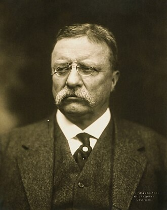
Theodore Roosevelt
1900 : Chine, participation à l'Alliance des huit nations qui intervient à Pékin pendant la révolte des Boxers.
1903 : Colombie, aide à une révolte, visant à la séparation de ce qui deviendra la république de Panama en vue de la construction du Canal de Panama.
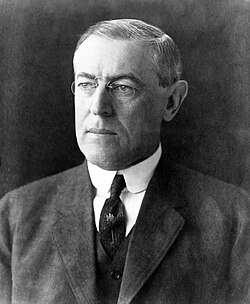
Woodrow Wilson
1914 : troupes d'occupation à Vera Cruz, Mexique[2].
1915 : troupes d'occupation en Haïti
1916 : troupes d'occupation en République dominicaine
1916-1917 : expédition punitive au Mexique suite à l'incursion armée de Pancho Villa aux États-Unis[3]
1917 à 1918 : Les États-Unis pendant la Première Guerre mondiale
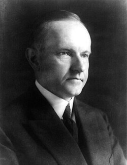
Calvin Coolidge1926 : Nicaragua : défense des intérêts des citoyens américains pendant des troubles politiques intérieurs[4].
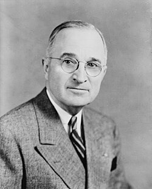
Harry S. Truman
1941 à 1945 : participation américaine à la Seconde Guerre mondiale, en Afrique, en Europe, et dans le Pacifique.
1945 et 1946 : envoi de troupes en Chine pour désarmer les forces de l'armée impériale japonaise et rapatrier les ressortissants japonais après la capitulation de ce pays [5].
1946 : Philippines soutien au gouvernement face à une insurrection.
1947 : Grèce, soutien logistique militaire au régime royaliste soutenu auparavant par le Royaume-Uni.
1950 à 1953 :Guerre de Corée.
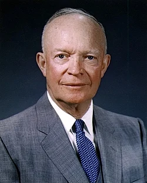
Dwight D. Eisenhower
1953 : Iran : la CIA organise un coup d'état pour renverser le Premier Ministre Mohammad Mossadegh.
1954 : Guatemala, renversement du gouvernement en place.
1958 : bombardements en Indonésie.
1960 : bombardements au Guatemala.
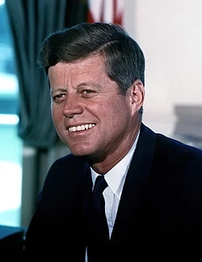
John Fitzgerald Kennedy
1961 : Cuba, échec du débarquement des opposants à Fidel Castro dans la baie des Cochons (n'est pas une intervention officielle des États-Unis)
1961 à 1972 : Guerre du Viêt Nam, soutien au gouvernement de la République du Viêt Nam (Sud Viet Nam) contre la République démocratique du Viêt Nam (Nord Viet Nam) et le Viet Cong. Guerre marquée par des conflits intérieurs aux États-Unis et de nombreux crimes de guerre sur place. Intervention au Laos et au Cambodge.
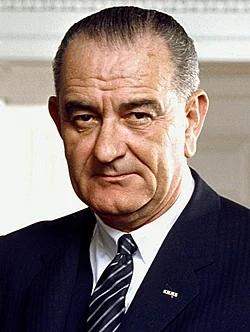
Lyndon B. Johnson
1964 : Panama: bombardements en République démocratique du Congo.
1965 : Indonésie, aide au gouvernement dans la répression d'un complot pro-chinois. République dominicaine, intervention dans une guerre civile avec l'aide de l'Organisation des États Américains. bombardements au Pérou.
1967 à 1969 : Formation des forces armées du Guatemala par les Special Forces.
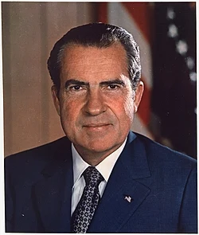
Richard Nixon
1970 : Oman, aide logistique à l'Iran pour contrer une insurrection à la demande de ce pays.
11 septembre 1973 : Chili, Encouragement à un coup d'État du général Augusto Pinochet.
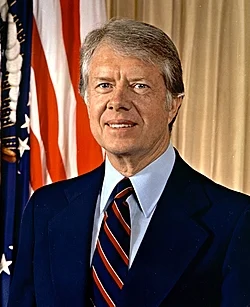
VJimmy Carter
3 juillet 1979 : Afghanistan, Opération Cyclone (1979 à 1987), armement par la CIA des moudjahidines afghans du commandant Massoud pour la guerre d'Afghanistan (1979-1989) contre l'URSS communiste.

Ronald Reagan
1980 à 1990 : Salvador, aide militaire au gouvernement et aux Escadrons de la mort, pour chasser la guérilla. 100 000 morts dans cette guerre civile.
1981 à 1988 : Nicaragua, soutien des contras situées au Honduras, afin de lutter contre les sandinistes du Nicaragua.
1983 : Liban Force multinationale de maintien de la paix, départ après double attentats contre les QG américains et français. Grenade : Invasion
1986, 14 avril : Libye, bombardement de plusieurs centres politiques et bases militaires, 37 morts libyens, 2 pilotes américains tués suite à des attentats anti-US en Europe.
1988, 18 avril : Bataille des plates-formes pétrolières Sassan et Sirri face à l'Iran.
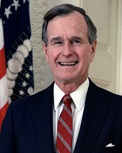
George H. W. Bush
1989 :Philippines, aide contre un coup d'État.Panama, renversement du général Manuel Noriega.
1991 : Guerre du Koweit, 1990-1991 (opération Tempête du désert) suite à une requête du Koweït (occupé par l'Iraq) à l'ONU. Avec le soutien de l'ONU et une coalition internationale
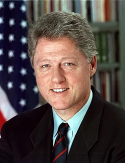
Bill Clinton
1993-1994 : Somalie, Opération Restore Hope, intervention militaire des É.-U. pour soutenir les opérations de l'ONU.
1994 : Haïti, intervention pour installer le Président élu Jean-Bertrand Aristide.
1995 : Bosnie-Herzégovine, soutien aérien aux forces de l'ONU/OTAN sur place puis déployement d'une force de maintien de la paix.
1998 : Irak, quatre jours de bombardement aérien sur des objectifs militaires et industriels.
1998 : Double bombardement d'une usine de médicaments (soupçonnée d'appartenir à Ben Laden) au Soudan et de camps d'entrainement terroriste en Afghanistan.
1999 : Bombardement et intervention au sol de l'OTAN dans la guerre du Kosovo et déployement depuis d'une force de maintien de la paix. : Timor oriental : Soutien logistique aux forces de l'ONU pour son indépendance.
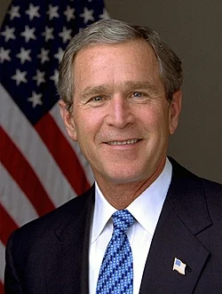
George W. Bush
2001 : La Guerre contre le terrorisme est déclaré suite aux attentats du 11 septembre 2001
2001-En cours : Intervention en Afghanistan dans le cadre de cette guerre en accord avec l'ONU
2002 : Philippines, dans le cadre de la Guerre contre le terrorisme en soutien du gouvernement philippin contre des guérillas.
2003-En cours : Guerre en Irak, les États-Unis envahissent l'Irak avec le soutien du Royaume-Uni et d'autres nations en se passant de l'accord de l'ONU.
2004 : Haïti les États-Unis, dans une intervention militaire et avec l'aide de la France, chassent le président haïtien Jean-Bertrand Aristide du pouvoir.
2005 : Asie du Sud-Est, réponse humanitaire au tremblement de terre du 26 décembre 2004 avec 16 500 militaires
2006 : Bombardements aérien de cibles d’Al-Qaïda en Somalie, avec l'accord du gouvernement de ce pays.